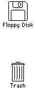

Downloading...

This computer needs a boot disk! Go find an icon with a green dot!

This computer cannot start without a valid ROM file.
Select a file:
Wait for the desktop to appear then double-click the icon.

Ejecting disks on the Macintosh
Before inserting a new disk on the Macintosh, you need to drag the old one to the trash can.
 Show Navigator |
 Show Documentation |
 Restart Computer |